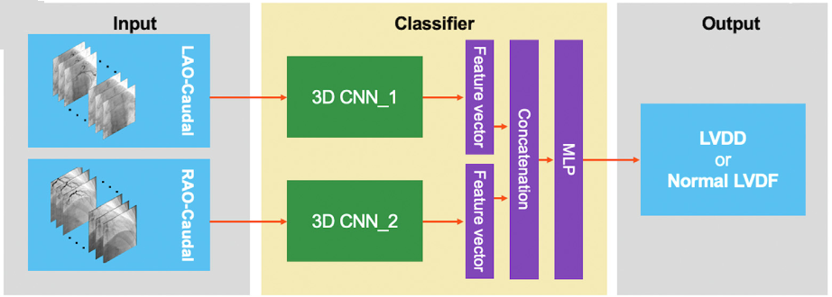
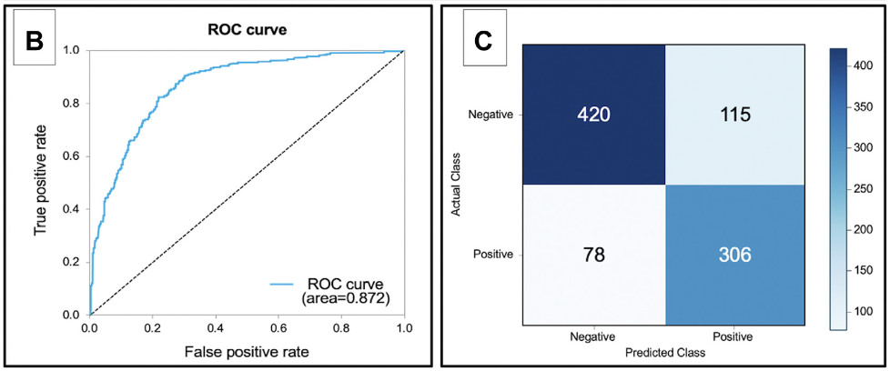
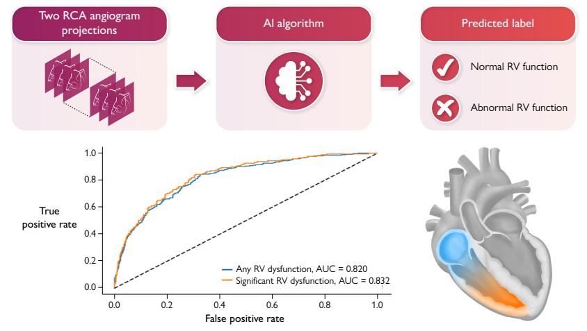
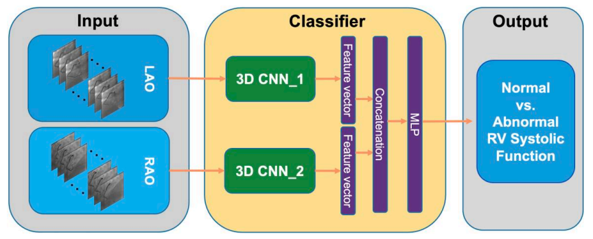
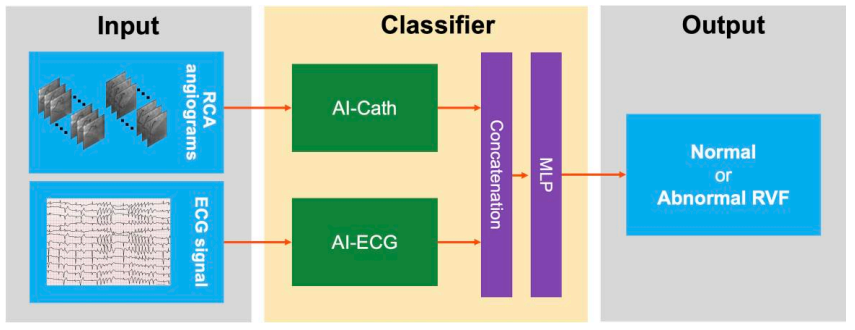
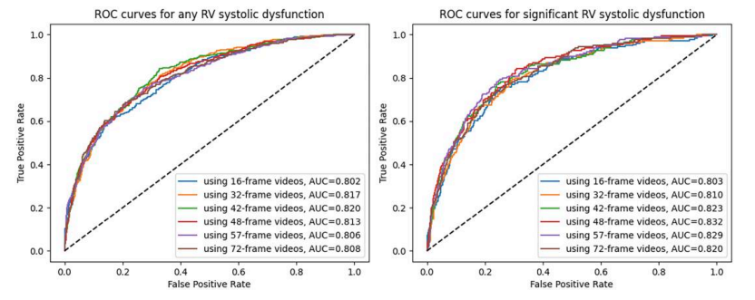

Projects
1) Wound bed and tissue semantic segmentation using CNNs for an iPhone application 2) Abnormal LVEF detection from coronary angiograms using 3D CNNs and video Transformers 3) Automated Assessment of Left Ventricular Filling Pressures From Coronary Angiograms With Video-Based Deep Learning Algorithms 4) Estimating right ventricular function from routine coronary angiography using 3D CNNs and multimodal models 5) Multi-class Wound image type classification using an ensemble DCNN-based classifierWound Bed & Tissue Semantic Segmentation
Problem Statement
Traditional wound measurement methods are manual, invasive, and inaccurate. The goal was to design a non-invasive AI-based solution for automatic wound segmentation in an iPhone application.

My role
I had the end-to-end ownership of the project from data annotation and processing to model training, evaluation, and model preparation for deployment. I designed and developed a DCNN-based algorithm for wound bed and tissue semantic segmentation.
Approach
- Model: DeepLabV3
- Data curation, cleaning, and annotation with clinical supervision
- Handled imbalanced data situation using weighted loss and synthetic data generation
- The model and experiments were implemented using Python programming language and PyTorch lightning framework.
- I trained the model on AWS SageMaker environment and converted it to .onnx version for deployment
- Metrics: IoU, Dice score, Accuracy
Outcome
- I improved the model performance in terms of Acc. and IoU by >7% (0.88 to 0.95) through data cleaning, correcting mislabeled samples, extensive data augmentation techniques, increasing input image dimensions, optimizing batch size, and correcting normalization approach
- Successfully deployed in production
- Bias mitigation using synthetic darker skin samples
Abnormal LVEF Detection from Coronary Angiograms
Problem Statement
Estimating Left Ventricular Ejection Fraction (LVEF) typically requires invasive procedures like left ventriculography that increases the risk level for the patient. This project aimed to build a non-invasive AI system using angiogram videos to detect LVEF abnormality. It can be used as a decision support system to help cardiologists during the surgery in Cath Lab.

My role
I had the end-to-end ownership of the project from data processing to model selection, training, and evaluation. I designed and developed an ensemble 3DCNN+Transformer model to detect patients with abnormal LVEF.

Approach
- Dataset: ~19K angiograms from >17K patients
- Preprocessing: DICOM header info extraction, filtering invalid samples, DICOM → PNG, video selection, frame selection
- Model: Ensemble of 3D ResNet152 + TimeSFormer
- Temporal modeling to capture heart motion dynamics
- I used multiple GPUs for model training
- The models and experiments were implemented using Python programming language and PyTorch framework.
Outcome
- AUC, sensitivity, specificity: 0.87, 0.77, 0.80
- Outperformed human baseline
- Enabled real-time decision support in cath lab
- The study was the first image-based AI project in whole Mayo Clinic Cath Lab's history
- This research was published in JACC journal: Deep learning to Estimate LVEF from Routine Coronary Angiographic Images
- This project was the basis for creating a dashboard viewer for Cath lab. I developed a POC version of this app and tested it in a real environment

Automated Assessment of Left Ventricular Filling Pressures From Coronary Angiograms With Video-Based Deep Learning Algorithms
Problem Statement
Estimating Conventional coronary angiography focuses on anatomy (blockages) but misses crucial functional data like left ventricular filling pressures. The Core Problem is that assessing diastolic function typically requires a separate echocardiogram, delaying real-time clinical decisions in the cath lab. Human operators cannot detect the subtle, dynamic motion of the arteries and myocardium that indicates elevated filling pressures, necessitating an automated, video-based deep learning solution.

My role
I had the end-to-end ownership of the project from data processing to model selection, training, and evaluation. I designed and developed a 3DCNN-based classifier to detect patients with abnormal Left Ventricular Diastolic Disfunction (LVDD) from angiogram videos.
Approach
- Dataset: 6,114 angiogram studies from 6,093 patients
- Preprocessing: DICOM header info extraction, filtering invalid samples, DICOM → PNG, video selection, frame selection
- Model: X3D
- Conducted experiments with different number of frames (videos with 16, 32, 48 frames)
- Temporal modeling to capture dynamic motion of coronary arteries and adjacent myocardium
- I used multiple GPUs for model training
- The models and experiments were implemented using Python programming language and PyTorch framework.
Outcome
- AUC, sensitivity, specificity: 0.872, 0.797, 0.785
- In a sensitivityanalysis restricting the study cohort to patients with Coronary Angiography and echocardiography within 30 days, the model maintained excellent performance with an AUC of 0.867, sensitivity of 0.781, and specificity of 0.772
- Subgroup analyses showed stability of the excellent model’s performance across subgroups stratified by age, in male patients vs female patients, in patients without aorticstenosis vs patients with aortic stenosis, and in patients with left ventricular hypertrophy vs patients with no left ventricular hy-pertrophy.
- This is the first documentation of AI-based estimation of LVDF from Coronary Angiography
- This research was published in the journal of JACC: Cardiovascular Interventions: Automated Assessment of Left Ventricular Filling Pressures From Coronary Angiograms
- This project was part of the dashboard viewer application built for Cath lab. I developed a POC version of this app and tested it in a real environment

Right ventricular function estimation from routine coronary angiography using 3D CNNs and multimodal models
Problem Statement
Assessing right ventricular function currently requires separate, time-consuming imaging modalities, leaving a wealth of functional data undetected during routine diagnostic coronary angiography. A 3D CNN-based approach and a multimodal model (video + signal) were developed that automatically screen for right ventricular dysfunction in real time using routine angiograms videos and continuous ECG data.

My role
I had the end-to-end ownership of the 3D CNN-based approach from data processing to model selection, training, and evaluation. I also designed and developed an ensemble model using both angiogram videos and ECG signals for each patient, to detect patients with abnormal RV function.

Approach
- Dataset: 10,336 coronary angiograms from 9,849 patients
- Preprocessing: DICOM header info extraction, filtering invalid samples, DICOM → PNG, video selection, frame selection
- Spatiotemporal Modeling: Utilized an X3D (3D-CNN) architecture to extract dynamic geometric and functional features from raw right coronary artery (RCA) angiogram videos
- Multimodal Data Fusion: Developed an ensemble pipeline that integrates video embeddings with synced ECG data and clinical variables, boosting overall classification robustness
- Clinical Deployment: Designed and implemented a lightweight Flask dashboard to translate complex model outputs into interpretable, point-of-care screening metrics for clinicians
- I used multiple GPUs for model training
- The models and experiments were implemented using Python programming language and PyTorch framework

Outcome
- Achieved an AUC of 0.87 in identifying advanced right ventricular (RV) systolic dysfunction by seamlessly combining dynamic cineangiography embeddings with ECG signal
- Proven capable of opportunistically screening for right ventricular strain directly from routine right coronary artery (RCA) views, removing the immediate necessity for separate, resource-intensive imaging like echocardiography or cardiac MRI
- This model integrates seamlessly into Cath lab workflows, offering real-time RV function insights
- This research was published in the European Heart Journal - Digital Health: Deep learning for estimating right ventricular function from routine coronary angiography
- This project was part of the dashboard viewer application built for Cath lab. I developed a POC version of this app and tested it in a real environment

Multi-class Wound Image Type Classification
Problem Statement
Classify wound types automatically using image data into different categories (e.g., surgical, diabetic, etc.) to assist clinical workflows.

My role
I had the end-to-end ownership of the project from data annotation and processing to model selection, training, and evaluation. I designed and developed an ensemble DCNN-based model to classify wound images into two or three classes.
Approach
- Model: ensemble of two AlexNet architectures (while image classifier + path classifier)
- Image-wise + patch-wise classification idea solved the wound scaling issue in images (tiny wounds and large wounds)
- Multi-class classification
- Optimized training pipeline and augmentation
- Very simple and fast algorithm for wound image classification


Outcome
- Published in Computers in Biology and Medicine: Multiclass wound image classification using an ensemble deep CNN-based classifier.
- Improved classification accuracy using ensemble learning
- First research that proposed a method for multiclass classification of wound images